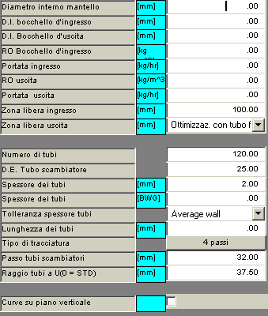
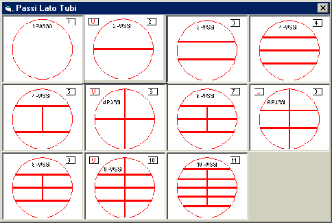
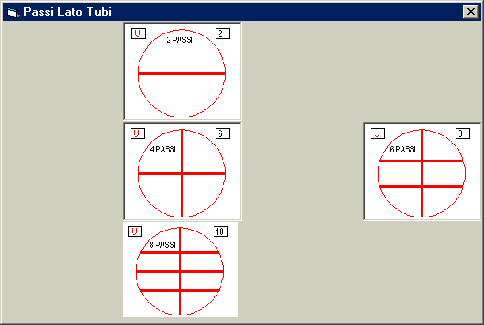
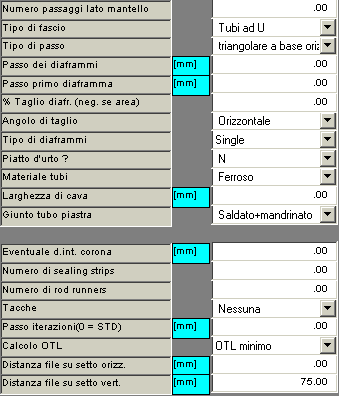
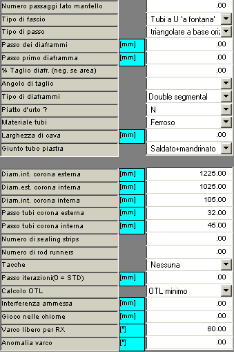

I dati di un nuovo progetto vengono imputati in due colonne di controlli come le seguenti, che appaiono nell'Area grafica della finestra principale quando si preme sul pulsante di comando 'Dati di progetto'.
La configurazione dei dati può variare dinamicamente in funzione dei valori via via immessi.

Si può eseguire un progetto fornendo il diametro interno del mantello, e chiedendo al programma di sistemare in esso il numero massimo possibile di tubi: in questo caso si porrà il numero dei tubi richiesto pari a zero. Oppure si può prescrivere il numero di tubi, ed il programma determinerà il diametro del mantello che li contiene: in questo caso si porrà pari a zero il diametro del mantello. Infine si possono fornire entrambi i dati: il comportamento del programma dipenderà allora dal valore del parametro 'Calcolo OTL'.
Ove questo valore sia specificato, il programma manterrà una distanza tra la mezzeria dell'arco del cerchio coincidente con il diametro interno del mantello, avente asse coincidente con l'asse del bocchello d'ingresso, e il diametro esterno dei tubi dell'ultima fila, pari ad un sesto del valore.
Questo parametro apparirà nella finestra dei dati iniziali solo se la zona libera in ingresso sarà posta pari a zero.
Se entrambi i valori della densità e della portata sono non nulli, il valore della zona libera sarà determinato dal programma in funzione della densità e della portata del fluido in ingresso.
Ove questo valore sia specificato, il programma manterrà una distanza tra la mezzeria dell'arco del cerchio coincidente con il diametro interno del mantello, avente asse coincidente con l'asse del bocchello d'uscita, e il diametro esterno dei tubi dellaprima fila, pari ad un quarto del valore.
Questo parametro apparirà nella finestra dei dati iniziali solo se la zona libera in uscita sarà posta pari ad un valore numerico nullo.
Se entrambi i valori della densità e della prtatata sono non nulli, il valore della zona libera sarà determinato dal programma in funzione della densità e della portata del fluido in uscita.
Se diametro interno bocchello, densità e portata sono non nulli il valore della zona libera verrà calcolato come descritto nel Cap. Zone libere del Manuale teorico.
Se diametro interno bocchello, densità e portata sono non nulli il valore della zona libera verrà calcolato come descritto nel Cap. Zone libere del Manuale teorico.
Questo parametro specifica la distanza da mantenere tra la mezzeria dell'arco del cerchio coincidente con il diametro interno del mantello, avente asse coincidente con l'asse del bocchello d'ingresso, e il diametro esterno dei tubi dell'ultima fila, (o la distanza della detta mezzeria con il piatto d'urto, se esistente).
Ove non specificato (ovvero posto pari a zero), il programma manterrà una zona libera in ingresso in funzione del diametro interno del bocchello d'ingresso. In tal caso il valore calcolato sarà riportato su sfondo giallo e non sarà direttamente modificabile. Per tornare a modificarlo direttamente bisogna nuovamente porre il diametro interno del bocchello d'ingresso pari a zero.
Se entrambi i valori della zona libera e del diametro del bocchello sono nulli si supporrà che l'alimentazione è ottenuta tramite un belt.
Questo parametro può assumere un valore numerico o un valore standard.
Nel primo caso il significato è identico a quello assunto dalla zona libera in ingresso, e si conviene che il fluido lato mantello esce dal basso.
Nel secondo caso, i valori standard potranno essere:
Questi dati sono generalmente autoesplicativi. Tuttavia valgono le seguenti note.
Premendo il pulsante compariranno le scelte possibili.
Nel caso di fasci a tubi diritti le scelte possibili sono le seguenti:

Nel caso di fasci a tubi ad U le scelte possibili sono le seguenti:

Nel caso di fasci a fontana la sola scelta possibile è 'due passaggi', e quindi il pulsante non sarà presente
Nel caso di tubi a U o a fontana imputare la lunghezza diritta netta (cioè al netto di eventuale sovralunghezze)

Questo dato è totalmente ininfluente nelle elaborazioni del programma TRACCIA. Esso è previsto per specificare il dato per le applicazioni collegate al programma.
Sono previsti i seguenti quattro tipi:
Questi dati non hanno alcuna influenza sull'elaborazione della tracciatura, in termini di posizioni dei singoli fori. Essi possono essere forniti, se desiderato, sia perché in alcuni casi i diaframmi saranno rappresentati nel disegno della tracciatura, sia per ulteriori elaborazioni eseguite da altre applicazioni del sistema Lancio.
I tipi previsti sono i seguenti:
Le possibili scelte sono 'ferroso' e 'non ferroso'.
Questo dato è utilizzato per entrare nella tabella TEMA che fornisce la massima campata libera non supportata in funzione del diametro dei tubi e del loro materiale.
Questo dato non ha alcuna influenza sulla tracciatura dell piastra tubiera.
Nel caso che siano specificati un diametro mantello ed un numero tubi entrambi diversi da zero, il comportamento del programma sarà il seguente:

In sede di progetto questi due dati non sono ancora noti. Si dovranno fornire quindi dei dati di primo tentativo: il programma manterrà costante la differenza fra i due dati durante le iterazioni del calcolo, e cioè manterrà costante la larghezza della pista circolare tra le due corone di tubi.
Normalmente questo dato sarà posto pari a zero. Tuttavia, se si vuole lasciare un cerchio centrale libero da tubi, se ne può specificare qui il diametro.
Nel caso di fasci a fontana è possibile specificare due valori diversi per il passo della tracciatura della corina interna e della corona esterna. Normalmente il passo della corona esterna è inferiore a quello della corona interna poiché le velocità del fluido lato mantello, di tipo sostanzialmente radiale, sono minori all'esterno (diametri grandi) piuttosto che vicino all'asse dello scambiatore.
Si può ammettere che durante l'infilaggio di una forcina una sua gamba strisci con una certa interferenza (sfruttando la flessibilità del tubo) contro la curva di una forcina già inserita. Lo scopo è di tentare per questa via la risoluzione di problemi di impossibilità dell'operazione di aggancio dovuti al non soddisfacimento della condizione di non-sorvolo.
E' opportuno porre in prima istanza questo valore pari a zero, e comunque non superare mai il valore di 1-2 mm.